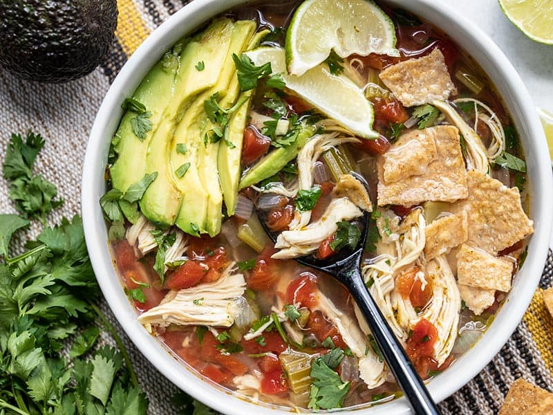

Chicken and Lime Soup

Description
This Chicken and Lime Soup is light, fresh, and flavorful with shredded chicken, vegetables, fresh cilantro, and a tangy lime infused broth.
Ingredients
- 1 yellow onion
- 3 ribs celery (about 1/4 bunch)
- 1 jalapeño
- 4 cloves garlic
- 2 Tbsp olive oil
- 1 boneless, skinless chicken breast (about 3/4 lb.)
- 6 cups chicken broth
- 2 10 oz. cans diced tomatoes with green chiles (Rotel)
- 1 tsp oregano
- 1/2 Tbsp cumin
- 1 lime
- 1/2 bunch cilantro
- 1 avocado
Instructions
- Dice the onion, celery, and jalapeño (scrape the seeds out of the jalapeño before dicing). Mince the garlic. Add the onion, celery, jalapeño, garlic, and olive oil to a large soup pot and cook over medium heat for about 5 minutes, or until the onions are soft and translucent.
- Add the chicken breast, chicken broth, diced tomatoes with chiles (with juices), oregano, and cumin to the pot. Place a lid on the pot, turn the heat up to high, and bring the broth up to a boil. Once boiling, turn the heat down to low and let the pot simmer for 45 minutes.
- After simmering for 45 minutes, carefully remove the chicken breast from the pot and use two forks to shred the meat. Return the shredded meat to the pot. Squeeze the juice of one lime into the soup (2-3 Tbsp juice).
- Rinse the cilantro and then roughly chop the leaves. Add the chopped cilantro to the soup, give it a quick stir, then serve. Slice the avocado and add a few slices to each bowl.